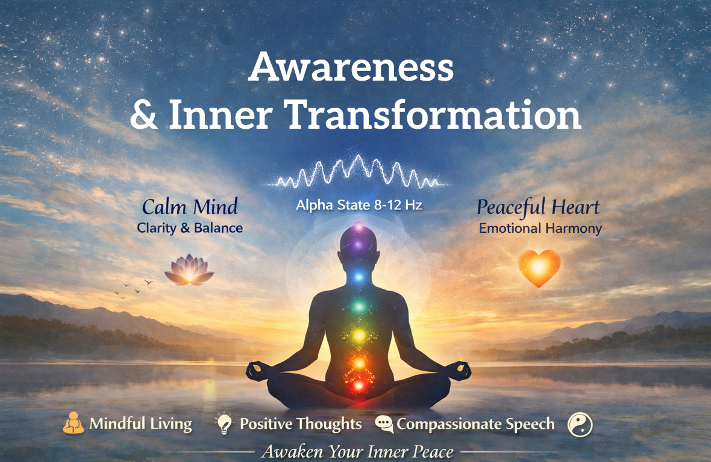

Discover the Power of Awareness
Awareness is the foundation of a peaceful, balanced, and meaningful life. It is the conscious state of being deeply present with our thoughts, emotions, words, and actions—so that we do not harm ourselves or others in any moment. Awareness is not just about knowing; it is about living with clarity, responsibility, and emotional balance.
In today’s fast-paced world, people often react impulsively to situations, leading to stress, conflict, and inner disturbance. Sittha Viruthi Yoga teaches us that true transformation begins when we shift from reaction to awareness. When we become aware, we gain the ability to pause, reflect, and respond with wisdom.
Awareness is the inner intelligence that protects our well-being while creating harmony in our surroundings. It helps us maintain peace not only within ourselves but also in our relationships, work, and environment.

Scientific Perspective: Awareness and Brainwave Balance
From a scientific perspective, awareness is closely connected to the functioning of our brain and nervous system. The quality of our thoughts and emotions directly influences our brainwave patterns. When the mind is calm, relaxed, and emotionally balanced, it operates in the Alpha brainwave state (approximately 8–12 Hz). This is a state of relaxed alertness where:
- The nervous system is calm yet active
- Creativity and clarity increase
- Emotional stability improves
- Decision-making becomes more balanced
- The body functions harmoniously
In this Alpha state, we experience a natural sense of peace and focus. We are able to think clearly without agitation and act without inner conflict.
However, when emotions intensify due to stress, anger, fear, or anxiety, the brain shifts to high-frequency Beta waves (above 12 Hz). While Beta waves are essential for active thinking and problem-solving, prolonged exposure to high Beta states can lead to:
- Mental stress and anxiety
- Emotional imbalance
- Reactive behavior
- Negative thinking patterns
- Physical fatigue
In such conditions, we unknowingly “pollute” our inner environment through negative thoughts, harsh words, and impulsive actions. This inner disturbance eventually affects our external environment, relationships, and overall quality of life.
Sittha Viruthi Yoga emphasizes maintaining the Alpha state through awareness practices, allowing individuals to live with clarity, calmness, and control.
Spiritual Perspective: Awareness as Non-Violence
Beyond science, awareness holds deep spiritual significance. It is the practice of non-violence—not just toward others, but toward oneself. Being aware means:
- Not allowing negative thoughts to dominate the mind
- Not using words that hurt ourselves or others
- Not engaging in actions that disturb inner peace
It is a conscious choice to remain emotionally balanced, even in challenging situations. Awareness transforms how we experience life. Instead of being controlled by emotions, we begin to guide them with understanding and compassion.
When we live with awareness, we naturally become a source of positive energy. Our presence brings calmness, our words carry kindness, and our actions reflect responsibility. This is true inner transformation.
Awareness in Daily Life: Practical Examples
Awareness is not limited to meditation or spiritual practice—it must be lived in everyday situations. Here are some practical ways awareness manifests in daily life:
1. Awareness in Conversations
When someone criticizes or disagrees with us, the natural tendency is to react defensively or with anger. Awareness allows us to pause, breathe, and respond thoughtfully. This not only protects our emotional balance but also maintains harmony in relationships.
2. Awareness in Self-Talk
Our inner dialogue shapes our emotional state. Negative thoughts like “I am not good enough” can damage self-confidence. Awareness helps us gently transform such thoughts into positive affirmations like “I am learning and improving.”
3. Awareness in Conflict Situations
Conflicts are a part of life, but how we handle them makes the difference. With awareness, we focus on solutions rather than blame. This creates a constructive environment instead of a toxic one.
4. Awareness in Solitude
Spending time alone mindfully is essential. Practices like meditation, reflection, and conscious breathing help stabilize the mind and bring it into the Alpha state. This strengthens clarity, emotional resilience, and inner strength.
Sittha Viruthi Yoga: A Path to Awareness
Sittha Viruthi Yoga places the highest importance on awareness as the foundation of inner transformation. It is not just a practice but a way of life that integrates science and spirituality. Through structured techniques, individuals are guided to regulate their thoughts, emotions, and actions consciously. The goal is to create a balanced inner environment that naturally reflects in outer life.
Key Practices in Sittha Viruthi Yoga
1. Meditation Meditation helps calm the mind and bring it into the Alpha state. It enhances focus, reduces stress, and improves emotional stability.
2. Manifestation This practice trains the mind to focus on positive intentions and outcomes, aligning thoughts with desired results.
3. Chakra Cleansing Balancing the body’s energy centers helps remove emotional blockages and promotes overall well-being.
4. Forgiveness Practice Letting go of past hurt is essential for emotional freedom. Forgiveness heals the mind and restores inner peace.
5. Thithi Practices These are specialized techniques designed to align inner energy with natural cycles, supporting mental clarity and emotional balance.
Each of these practices strengthens awareness, allowing individuals to live consciously and harmoniously.
Benefits of Awareness through Sittha Viruthi Yoga
Developing awareness brings profound benefits across all areas of life:
Mental Benefits
- Improved clarity and focus
- Reduced stress and anxiety
- Better decision-making ability
Emotional Benefits
- Greater emotional stability
- Increased self-confidence
- Healthier relationships
Physical Benefits
- Relaxed nervous system
- Improved sleep quality
- Enhanced overall well-being
Spiritual Benefits
- Deeper self-understanding
- Inner peace and contentment
- Connection with higher consciousness
Why Awareness is the Key to Inner Transformation
Inner transformation does not happen overnight. It is a gradual process that begins with awareness. Without awareness, we remain trapped in unconscious patterns of thinking and behavior. Awareness acts like a light—it reveals what is happening within us. Once we see clearly, we gain the power to change. This is why Sittha Viruthi Yoga considers awareness the most powerful tool for transformation.
When awareness becomes a part of our daily life:
- We stop reacting impulsively
- We start responding with wisdom
- We create harmony within and around us
- We become responsible for our thoughts, words, and actions
This shift leads to a life filled with peace, purpose, and positivity.
Begin Your Journey Today
Awareness is not something to be achieved in the future—it is something to be practiced in every moment. With consistent effort and the right guidance, anyone can cultivate awareness and experience true inner transformation. Sittha Viruthi Yoga offers a structured and practical approach to developing awareness through proven techniques that combine scientific understanding with spiritual wisdom.
Conclusion: Awareness is the Foundation of Peace
In essence, awareness is emotional balance in action. It is the science of regulating our inner frequencies and the spirituality of living in harmony with ourselves and others. When we are aware:
- Our thoughts become pure
- Our words become kind
- Our actions become responsible
We no longer create inner chaos. Instead, we become a source of calm, clarity, and positive energy. Awareness is not just a practice—it is a way of life. And it is the foundation of peace within the mind, the heart, and the world.
Start your journey of Awareness today with Sittha Viruthi Yoga.
Experience the transformation from within and create a life filled with clarity, balance, and peace. Join our programs and begin your inner transformation now.